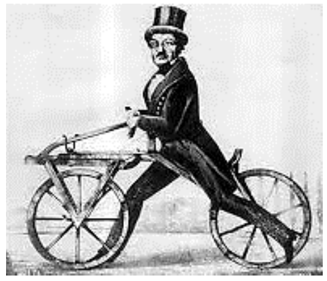

先讀文章、作答下方的題目，再展開最後的「看答案、依據句與逐段中譯」。也可以到互動練習線上作答，交卷後自動批改。
第 1 段Born in 1785 in southwestern Germany, Baron Karl Drais was one of the most creative German inventors of the 19th century. The baron’s numerous inventions include, among others, the earliest typewriter, the meat grinder, a device to record piano music on paper, and two four-wheeled human-powered vehicles. But it was the running machine, the modern ancestor of the bicycle, that made him famous.
第 2 段The running machine, also called Draisine or hobby horse, was in effect a very primitive bicycle: it had no chains and was propelled by riders pushing off the ground with their feet. Though not a bike in the modern sense of the word, Drais’ invention marked the big bang for the bicycle’s development. It was the first vehicle with two wheels placed in line. The frame and wheels were made of wood; the steering already resembled a modern handlebar. Drais’ big democratic idea behind his invention was to find a muscle-powered replacement for the horses, which were expensive and consumed lots of food even when not in use. The machine, he believed, would allow large numbers of people faster movement than walking or riding in a coach.
第 3 段Drais undertook his first documented ride on June 12, 1817, covering a distance of 13 kilometers in one hour. A few months later, Drais created a huge sensation when he rode 60 kilometers in four hours. These were later followed by a marketing trip to Paris, where the hobby horse quickly caught on. The fad also quickly spread to Britain.
第 4 段The success of the hobby horse was short-lived, though. They were heavy and difficult to ride. Safety was an issue, too: They lacked a brake, as well as cranks and pedals. There were frequent collisions with unsuspecting pedestrians, and after a few years Drais’ invention was banned in many European and American cities. Drais’ ideas, however, did not disappear entirely. Decades later, the machine was equipped by Frenchmen Pierre Lallement and Pierre Michaux with pedals to become the modern bicycle.

36.Why did Drais invent the running machine?
37.What does “marked the big bang” mean in the second paragraph?
38.Which of the following descriptions is true about the running machine?
39.Why did the hobby horse fail to become a common vehicle in the 19th century?
| 題號 | 官方答案 | 答對率 | 鑑別度 |
|---|---|---|---|
| 36 | (D) | 74% | 56 |
| 37 | (D) | 52% | 64 |
| 38 | (D) | 73% | 56 |
| 39 | (C) | 80% | 48 |
答對率與鑑別度出處：大考中心 107 學年度指定科目考試統計圖表：英文科答對率及鑑別指數表
第 2 段to find a muscle-powered replacement for the horses
第 2 段The machine, he believed, would allow large numbers of people faster movement than walking or riding in a coach.
第 2 段Though not a bike in the modern sense of the word
第 2 段It was the first vehicle with two wheels placed in line.
第 2 段the steering already resembled a modern handlebar.
第 4 段They were heavy and difficult to ride.
第 4 段There were frequent collisions with unsuspecting pedestrians
第 1 段德萊斯男爵（Baron Karl Drais）1785 年生於德國西南部，是 19 世紀德國最有創意的發明家之一。他的發明很多，包括最早的打字機、絞肉機、一種把鋼琴音樂記錄在紙上的裝置，還有兩種用人力推動的四輪車。不過，讓他成名的，是現代自行車的始祖：滑行車（running machine）。
第 2 段滑行車又叫 Draisine 或 hobby horse，其實就是一種非常原始的自行車：沒有鏈條，靠騎的人用腳蹬地前進。雖然不是現代意義上的自行車，德萊斯的發明卻是自行車發展的重大起點。滑行車是第一輛兩個輪子前後排成一直線的車。車架和輪子都是木頭做的，轉向裝置已經很像現代的把手。德萊斯發明滑行車，背後有一個讓一般大眾都能受益的遠大構想：找一種靠人力的交通工具來取代馬，因為馬很貴，不用的時候也要吃很多飼料。他認為，這種車能讓許多人移動得比走路或坐馬車更快。
第 3 段1817 年 6 月 12 日，德萊斯第一次有紀錄的試騎，一個小時騎了 13 公里。幾個月後，他四個小時騎了 60 公里，轟動一時。之後他到巴黎推銷，滑行車很快就在巴黎流行起來，這股熱潮也很快傳到英國。
第 4 段不過，滑行車的成功很短暫。這種車很重，也很難騎。安全也是問題：沒有煞車，也沒有曲柄和踏板。滑行車常常撞上沒有防備的行人，幾年以後，歐洲和美國的許多城市都禁止使用德萊斯的發明。然而，德萊斯的構想並沒有完全消失。數十年後，法國人 Pierre Lallement 和 Pierre Michaux 替滑行車裝上踏板，成了現代的自行車。
第 1 段But it was the running machine, the modern ancestor of the bicycle, that made him famous.